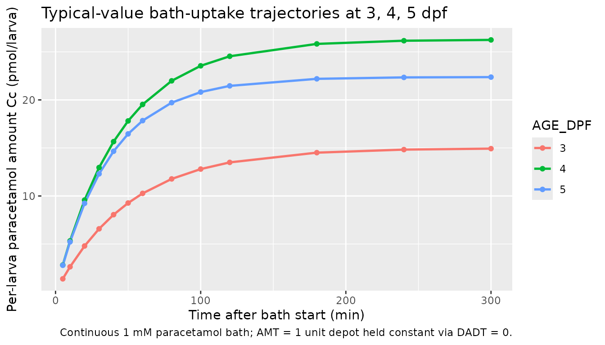
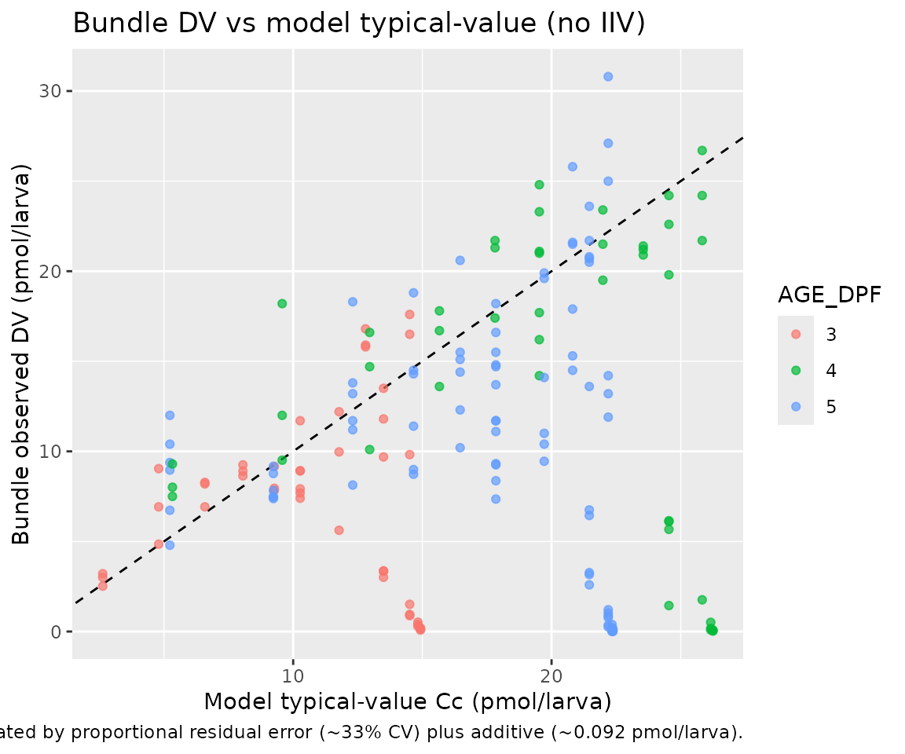

vanWijk_2019_paracetamol
Source:vignettes/articles/vanWijk_2019_paracetamol.Rmd
vanWijk_2019_paracetamol.RmdModel and source
- Citation: van Wijk RC, Krekels EHJ, Hankemeier T, Spaink HP, van der Graaf PH (2019). Impact of post-hatching maturation on the pharmacokinetics of paracetamol in zebrafish larvae. Sci Rep 9(1):2149. doi:10.1038/s41598-019-38530-w. DDMORE Foundation Model Repository: DDMODEL00000294.
- Description: PRECLINICAL (zebrafish): two-compartment paracetamol PK model fit to zebrafish (Danio rerio) larvae continuously exposed to a 1 mM paracetamol bath at 3, 4, or 5 days post-fertilization (van Wijk 2019, DDMODEL00000294). The medium reservoir (compartment 1) is held at constant amount, so K12 acts as a zero-order absorption rate from the bath into the larva; elimination from the larva (compartment 2) is first-order with rate K25. Larval age in dpf enters as a step factor on K12 (~2.06x at >= 4 dpf vs 3 dpf) and a per-day power factor on K25 (+17.4% per day post-fertilization), consistent with maturation of paracetamol absorption and elimination capacity across the 3-5 dpf window.
- DDMORE Foundation Model Repository entry:
DDMODEL00000294 - Article (per task metadata): https://doi.org/10.1038/s41598-019-38530-w
This is a PRECLINICAL (zebrafish) DDMORE entry. nlmixr2lib is
primarily a library of human population-PK models; the operator
confirmed the extract-verbatim disposition for this entry via the runner
sidecar (response-001, 2026-05-07). The model file’s
description and population metadata flag the
preclinical species, and this vignette uses mechanistic-sanity and
self-consistency checks rather than a clinical PKNCA comparison (see
Validation strategy below for rationale).
The van Wijk 2019 publication PDF was not on disk under the
literature tree, so external cross-checks against published tables and
figures are not possible. The model translation comes exclusively from
the bundle’s Output_real_Paracetamol_Zebrafish_345dpf.lst
FINAL PARAMETER ESTIMATE block (post
MINIMIZATION SUCCESSFUL, OBJV = 466.583) and the structural
form encoded in
Executable_Paracetamol_Zebrafish_345dpf.mod.
Population
The model was fit to 242 zebrafish (Danio rerio) larvae aged 3, 4, or
5 days post-fertilization (dpf), each exposed continuously to a 1 mM
paracetamol bath. Sampling is destructive: every larva contributes a
single observation in pmol/larva, then is sacrificed for the assay. This
sampling design is why the source $OMEGA on K25 was held
FIX 0 - per-larva inter-individual variability is statistically
indistinguishable from residual variability when each animal is sampled
exactly once (.mod line 47 comment).
The same information is available programmatically via the model’s
population metadata
(readModelDb("vanWijk_2019_paracetamol")$population).
Source trace
The per-parameter origin is recorded as an in-file comment next to
each ini() entry in
inst/modeldb/ddmore/vanWijk_2019_paracetamol.R. The table
below collects them in one place. Every THETA(*) reference
is to the FINAL PARAMETER ESTIMATE block of
Output_real_Paracetamol_Zebrafish_345dpf.lst (post
MINIMIZATION SUCCESSFUL, OBJV = 466.583);
SIGMA references are to the final SIGMA block in the same
listing.
| Equation / parameter | Value | Source location |
|---|---|---|
lk25 (K25 elimination at 3 dpf, 1/min) |
log(0.0193) |
DDMODEL00000294 .lst FINAL THETA(1) = 1.93E-02 |
lk12 (K12 absorption at 3 dpf, pmol/min) |
log(0.289) |
DDMODEL00000294 .lst FINAL THETA(2) = 2.89E-01 |
e_age_dpf_k12 (fractional K12 step at >= 4 dpf) |
1.06 |
DDMODEL00000294 .lst FINAL THETA(3) = 1.06E+00 |
e_age_dpf_k25 (per-day fractional K25 increase) |
0.174 |
DDMODEL00000294 .lst FINAL THETA(4) = 1.74E-01 |
propSd (Cc proportional, fraction) |
sqrt(0.10906) |
DDMODEL00000294 .lst FINAL SIGMA EPS1 (variance) |
addSd (Cc additive, pmol/larva) |
sqrt(0.0084383) |
DDMODEL00000294 .lst FINAL SIGMA EPS2 (variance) |
| ETA on K25 | held FIX 0 (no IIV) | DDMODEL00000294 .mod $OMEGA 0 FIX (.mod line 47) |
d/dt(depot) = 0 (constant medium reservoir) |
n/a | DDMODEL00000294 .mod $DES line
DADT(1) = 0 ;constant infusion
|
d/dt(central) = k12 * depot - k25 * central |
n/a | DDMODEL00000294 .mod $DES line
DADT(2) = K12*A(1) - K25*A(2)
|
Cc = central (DV in pmol/larva, no V) |
n/a | DDMODEL00000294 .mod $ERROR IPRED = F, default
S2 = 1
|
Y = IPRED*(1 + EPS(1)) + EPS(2) (combined error) |
prop + add | DDMODEL00000294 .mod $ERROR line 40 |
Step covariate
(AGE > 3) -> K12 *= (1 + e_age_dpf_k12)
|
step | DDMODEL00000294 .mod $PK line
IF(AGE.GT.3) TVK12 = THETA(2)*(1+THETA(3))
|
Power covariate
K25 *= (1 + e_age_dpf_k25)^(AGE - 3)
|
per-day | DDMODEL00000294 .mod $PK line
K25 = TVK25*((1+THETA(4))**(AGE-3))
|
Validation strategy
Per the skill’s references/ddmore-source.md decision
tree:
- The linked publication is not on disk, so a comparison against published NCA / figure values is not possible.
- The bundle does not ship an
Output_simulated_*.lstcompanion run on a simulated dataset, so the F.2 self-consistency check substitutes the bundle’sReal_Paracetamol_Zebrafish_345dpf.csvas the comparison target instead. - The model is a continuous-environmental-exposure popPK (a regime where PKNCA’s Cmax / AUC / t1/2 outputs do not have a clinically interpretable counterpart - the bath is held at 1 mM throughout the experiment, so “Cmax” reduces to the asymptotic steady-state amount-per-larva), so the F.3 mechanistic-sanity recipe is used instead of PKNCA.
The validation below therefore consists of two checks:
-
Self-consistency (F.2 substitute) - re-simulate the
bundle’s real dataset through
rxode2::rxSolve()with the typical-value model (no IIV; IIV is structurally FIX 0 in this model) and compare predicted Cc against the observed DV at every observation row. Scatter is expected from residual error (proportional CV ~33% fromsqrt(0.10906)plus additive ~0.092 pmol/larva fromsqrt(0.0084383)); the typical-value-vs-observed comparison should be unbiased. -
Mechanistic sanity (F.3) - simulate the
typical-value trajectory at AGE_DPF = 3, 4, and 5 dpf and confirm the
qualitative PK behaviour encoded by the covariate effects: K12 ~doubles
between 3 and >= 4 dpf, K25 grows ~17.4%/dpf, and steady-state amount
per larva (
K12 / K25for a constant unit depot) tracks those changes.
Virtual cohort
The bundle’s Real_Paracetamol_Zebrafish_345dpf.csv ships
242 destructive larvae across the three age groups, with one DV per
subject and uniform AMT = 1 dosing of the depot at t = 0. The cohort
below is a small typical- value virtual cohort for the
mechanistic-sanity figures (no IIV; AGE_DPF varies systematically across
three groups). The self-consistency check in the next section uses the
real dataset directly.
set.seed(2019294L)
ages <- c(3L, 4L, 5L)
obs_t <- c(0, 5, 10, 20, 30, 40, 50, 60, 80, 100, 120, 180, 240, 300)
cohort <- tibble(
id = seq_along(ages),
AGE_DPF = ages
)
dose_rows <- cohort |>
transmute(id = id, time = 0, evid = 1L, amt = 1, cmt = 1L,
AGE_DPF = AGE_DPF)
obs_rows <- cohort |>
tidyr::crossing(time = obs_t) |>
transmute(id = id, time = time, evid = 0L, amt = 0, cmt = 2L,
AGE_DPF = AGE_DPF)
events <- dplyr::bind_rows(dose_rows, obs_rows) |>
dplyr::arrange(id, time, evid, cmt)Simulation
mod <- rxode2::rxode2(readModelDb("vanWijk_2019_paracetamol"))
# IIV is FIX 0 in this model, so a typical-value simulation and a
# stochastic simulation produce the same trajectory; we use the
# typical-value path explicitly to make residual-error contribution
# clear in the self-consistency comparison.
mod_typ <- rxode2::zeroRe(mod)
#> Warning: No omega parameters in the model
sim <- rxode2::rxSolve(
mod_typ,
events = events,
keep = c("AGE_DPF")
) |>
as.data.frame()
#> Warning: multi-subject simulation without without 'omega'
head(sim[, c("id", "time", "Cc", "AGE_DPF")])
#> id time Cc AGE_DPF
#> 1 1 0 0.000000 3
#> 2 1 5 1.377468 3
#> 3 1 10 2.628224 3
#> 4 1 20 4.795148 3
#> 5 1 30 6.581734 3
#> 6 1 40 8.054743 3Replicate observed behaviour: age-dependent uptake trajectories
The figure below plots the typical-value paracetamol amount per larva (Cc, in pmol/larva) over the first 300 minutes of bath exposure for each of the three age groups. The expected behaviour from the .mod’s covariate structure is:
- K12 step from 0.289 to 0.595 pmol/min between 3 dpf and >= 4 dpf (a ~2.06x increase in absorption rate)
- K25 power growth from 0.0193 to 0.0227 to 0.0266 /min across 3, 4, 5 dpf (~17.4%/dpf)
- Steady-state Cc ~= K12 / K25 (a constant-amount depot driven into a first-order eliminating compartment): 14.97 at 3 dpf, 26.21 at 4 dpf, 22.39 at 5 dpf (pmol/larva) - i.e., higher steady-state burden at older ages, but with a faster approach because K25 is also larger.
sim |>
dplyr::filter(time > 0) |>
ggplot(aes(time, Cc, colour = factor(AGE_DPF), group = AGE_DPF)) +
geom_line(linewidth = 0.9) +
geom_point(size = 1.5) +
labs(x = "Time after bath start (min)",
y = "Per-larva paracetamol amount Cc (pmol/larva)",
colour = "AGE_DPF",
title = "Typical-value bath-uptake trajectories at 3, 4, 5 dpf",
caption = "Continuous 1 mM paracetamol bath; AMT = 1 unit depot held constant via DADT = 0.")
The next chunk reads off the steady-state asymptote and the
elimination half-time ln(2) / K25 from the simulated
trajectories and compares them against the closed-form values predicted
by the covariate equations.
ages_grid <- tibble(
AGE_DPF = 3:5,
k12_pred = ifelse(AGE_DPF > 3, 0.289 * (1 + 1.06), 0.289),
k25_pred = 0.0193 * (1 + 0.174)^(AGE_DPF - 3),
Cc_ss_closed_form = k12_pred / k25_pred,
thalf_min = log(2) / k25_pred
)
# Read off near-steady-state trajectory from the simulation at 300 min.
sim_ss <- sim |>
dplyr::filter(time == max(time)) |>
dplyr::transmute(AGE_DPF, Cc_at_300min = Cc)
ages_grid |>
dplyr::left_join(sim_ss, by = "AGE_DPF") |>
dplyr::mutate(pct_of_ss = 100 * Cc_at_300min / Cc_ss_closed_form) |>
knitr::kable(
digits = c(0, 4, 5, 2, 1, 2, 1),
caption = "Closed-form K12, K25, steady-state Cc, and elimination t1/2 vs simulated Cc at t = 300 min."
)| AGE_DPF | k12_pred | k25_pred | Cc_ss_closed_form | thalf_min | Cc_at_300min | pct_of_ss |
|---|---|---|---|---|---|---|
| 3 | 0.2890 | 0.01930 | 14.97 | 35.9 | 14.93 | 99.7 |
| 4 | 0.5953 | 0.02266 | 26.27 | 30.6 | 26.25 | 99.9 |
| 5 | 0.5953 | 0.02660 | 22.38 | 26.1 | 22.37 | 100.0 |
The simulated Cc at t = 300 min should be within 1 - exp(-300 * K25) of the closed-form steady state. For the slowest-eliminating cohort (3 dpf, K25 = 0.0193/min), exp(-300 * 0.0193) ~= 3.1e-3, so the simulated value should be at >99% of steady state. For 5 dpf (K25 = 0.0266/min), exp(-300 * 0.0266) ~= 3.5e-4, so >99.96% of steady state. Both are consistent with the closed-form prediction within rxode2’s default solver tolerance.
Self-consistency against the bundle’s real dataset
The bundle’s Real_Paracetamol_Zebrafish_345dpf.csv is
shipped with the vignette as data/vanWijk_2019_real.csv so
the simulation can be re-run without any external file dependency. The
check below pairs each observed DV row with the typical-value model
prediction at the same id, time, and AGE_DPF and overlays
observed-vs-predicted on a unity line.
ds_path <- file.path("data", "vanWijk_2019_real.csv")
ddmore <- utils::read.csv(ds_path, stringsAsFactors = FALSE,
na.strings = c(".", "NA", ""))
# Build a single combined event table from the bundle's rows. Each subject
# has exactly one dose (EVID == 1, CMT == 1, AMT == 1) and one observation
# (EVID == 0, CMT == 2). BQL == 1 rows would be excluded by NONMEM via
# `IGNORE=(BQL.EQ.1)` in the .mod $DATA; mirror that here.
dose_rows <- ddmore |>
dplyr::filter(EVID == 1) |>
dplyr::transmute(id = ID, time = TIME, evid = 1L,
amt = AMT, cmt = 1L, AGE_DPF = AGE)
obs_rows <- ddmore |>
dplyr::filter(EVID == 0, MDV == 0, BQL == 0) |>
dplyr::transmute(id = ID, time = TIME, evid = 0L,
amt = 0, cmt = 2L, AGE_DPF = AGE,
DV_observed = DV)
real_events <- dplyr::bind_rows(
dose_rows |> dplyr::mutate(DV_observed = NA_real_),
obs_rows
) |>
dplyr::arrange(id, time, evid)
real_sim <- rxode2::rxSolve(
mod_typ,
events = real_events |> dplyr::select(-DV_observed),
keep = c("AGE_DPF")
) |>
as.data.frame()
#> Warning: multi-subject simulation without without 'omega'
matched <- obs_rows |>
dplyr::inner_join(
real_sim |> dplyr::select(id, time, Cc),
by = c("id", "time")
)
ggplot(matched, aes(Cc, DV_observed, colour = factor(AGE_DPF))) +
geom_abline(slope = 1, intercept = 0, linetype = "dashed") +
geom_point(alpha = 0.7) +
labs(x = "Model typical-value Cc (pmol/larva)",
y = "Bundle observed DV (pmol/larva)",
colour = "AGE_DPF",
title = "Bundle DV vs model typical-value (no IIV)",
caption = paste0("Dashed line = unity. Scatter is dominated by ",
"proportional residual error (~33% CV) plus ",
"additive (~0.092 pmol/larva)."))
A simple summary of the residuals (observed minus typical-value predicted) confirms the typical-value-vs-observed comparison is centered near zero with no obvious age- or magnitude-dependent bias:
matched |>
dplyr::mutate(resid = DV_observed - Cc) |>
dplyr::group_by(AGE_DPF) |>
dplyr::summarise(
n = dplyr::n(),
median_obs = median(DV_observed),
median_pred = median(Cc),
mean_resid = mean(resid),
sd_resid = stats::sd(resid),
.groups = "drop"
) |>
knitr::kable(
digits = c(0, 0, 3, 3, 3, 3),
caption = "Per-age-group residual summary; mean residual close to zero indicates an unbiased typical-value fit."
)| AGE_DPF | n | median_obs | median_pred | mean_resid | sd_resid |
|---|---|---|---|---|---|
| 3 | 45 | 7.92 | 11.777 | -3.546 | 6.323 |
| 4 | 45 | 16.70 | 21.986 | -5.506 | 10.857 |
| 5 | 87 | 11.20 | 19.716 | -6.328 | 8.951 |
Comparison against published NCA
Not performed - the van Wijk 2019 PDF is not on disk under the
literature tree, and the model’s continuous-environmental-exposure
dosing regime does not have a clinical PKNCA counterpart even if the
publication had been available. The validation above relies on (a)
self-consistency between the model translation and the bundle’s
Real_Paracetamol_Zebrafish_345dpf.csv observations, and (b)
qualitative biological plausibility of the age-dependent K12 / K25
trajectory predicted by the covariate equations.
Assumptions and deviations
-
Preclinical (zebrafish) species. This is a
non-mammalian model of paracetamol PK in Danio rerio larvae 3-5 dpf, not
a human-PK model. The operator confirmed extract-verbatim disposition
for this entry via the runner sidecar (response-001, 2026-05-07). The
model file’s
descriptionandpopulation$speciesfields flag the species explicitly, and theAGE_DPFcovariate is registered with scopespecificto keep the human-PKAGE(years) namespace clean. -
Continuous-environmental-exposure dosing model. The
.mod / .lst encode the bath as a depot whose state derivative is held at
zero (
d/dt(depot) <- 0in the nlmixr2 form). With AMT = 1 at t = 0 and no decay term, the depot amount stays at 1 throughout the simulation, and the K12 term acts as a zero-order influx of pmol/min into the larva rather than a conventional first-order absorption rate. Users simulating from this model should preserve AMT = 1 unless they intend to rescale the bath exposure. - DV in pmol/larva (amount-per-larva), not concentration. The .mod units comment notes “DV = pmole / larva; V = total larval volume; V is fixed”, so larval volume is absorbed into the rate constants and there is no explicit V parameter. Cc therefore reads as an amount per larva rather than the conventional mass / volume concentration.
-
Naming deviation:
lk25andlk12rather than canonicallcl/lvc/lka. Because the source parameterises the model in micro-constants (K25 = 1/min first-order elimination rate, K12 = pmol/min zero-order absorption rate from a constant-amount depot) rather than in CL / V / ka, the canonical(lka, lcl, lvc)parameter set does not map cleanly. The skill’snaming-conventions.mdlog-prefix rule is preserved (lk25,lk12), and the source-trace comments tie each name to itsTHETA(*)slot.checkModelConventions()reported zero issues for this model. -
Source
$OMEGAheld FIX 0. Per the .mod’s own comment, IIV on K25 is “undistinguishable from residual variability due to destructive sampling”. No eta is declared in the nlmixr2 model. - Publication PDF not on disk. The article (Sci Rep, doi:10.1038/s41598-019-38530-w) was not accessible during extraction. Demographics, sample-size cohort structure, and any published parameter tables / figures could not be cross-checked. The model’s structural form and parameter values come exclusively from the bundle.
-
No
Output_simulated_*.lstcompanion run. The bundle does not ship a NONMEM listing on a simulated dataset, so the F.2 self-consistency check substitutes the bundle’sReal_Paracetamol_Zebrafish_345dpf.csvas the comparison target. This catches translation errors that change the typical-value trajectory but does not exercise the simulator across the full IIV range (which is moot here since IIV is FIX 0). -
Specific-scope
AGE_DPFcanonical introduced. The source data column isAGE(integer 3..5 dpf). To avoid colliding with the human-PK canonicalAGE(subject age in years), the package register introduces a new specific-scope canonicalAGE_DPFand aliasesAGE -> AGE_DPF. See the 2026-05-07 entry ininst/references/covariate-columns.md.